범주형 × 수치형 변수의 관계
‘그룹에 따라 숫자가 달라질까?’ 비교하기
- 범주별로 수치형 변수의 평균·표준편차 등을 계산할 수 있다 (
groupby). - 두 집단·세 집단 이상의 평균 차이를 검정(t-검정, ANOVA)해 본다.
- 상자그림·바이올린·밀도 그래프 등으로 그룹별 분포를 비교할 수 있다.
- 혼동 효과(숨은 변수의 함정)가 무엇인지 안다.
import pandas as pd
import numpy as np
import matplotlib.pyplot as plt
import seaborn as sns
import platform
sns.set_theme(style='whitegrid') # 그래프 기본 스타일 (이 줄을 먼저!)
# 그래프에서 한글이 깨지지 않게 하는 설정 (운영체제에 맞는 글꼴 선택)
plt.rcParams['font.family'] = {'Darwin': 'Apple SD Gothic Neo', 'Windows': 'Malgun Gothic'}.get(platform.system(), 'NanumGothic')
plt.rcParams['axes.unicode_minus'] = False # 마이너스(-) 기호 깨짐 방지
tips = pd.read_csv("data/tips.csv")
diamonds = pd.read_csv("data/diamonds.csv")
titanic = pd.read_csv("data/titanic.csv")
tips["day"] = pd.Categorical(tips["day"], ["Thur", "Fri", "Sat", "Sun"], ordered=True)
tips["tip_rate"] = tips["tip"] / tips["total_bill"] * 100 # 팁 비율(%): 금액 대비 팁이 몇 %인지
tips.head()
| total_bill | tip | sex | smoker | day | time | size | tip_rate | |
|---|---|---|---|---|---|---|---|---|
| 0 | 16.99 | 1.01 | Female | No | Sun | Dinner | 2 | 5.944673 |
| 1 | 10.34 | 1.66 | Male | No | Sun | Dinner | 3 | 16.054159 |
| 2 | 21.01 | 3.50 | Male | No | Sun | Dinner | 3 | 16.658734 |
| 3 | 23.68 | 3.31 | Male | No | Sun | Dinner | 2 | 13.978041 |
| 4 | 24.59 | 3.61 | Female | No | Sun | Dinner | 4 | 14.680765 |
이 장의 핵심 질문은 이렇습니다: “범주(그룹)에 따라 수치가 달라지는가?” 예를 들면 “남성과 여성의 계산 금액은 다를까?”, “요일에 따라 팁 비율이 다를까?” 같은 것입니다.
학교 대항 체육대회에서 반별 평균 기록을 비교하는 것과 같습니다. ‘반’은 범주형 변수, ‘기록’은 수치형 변수입니다. 반마다 기록을 묶어서 요약하고(4.1), 그림으로 겹쳐 놓고 비교합니다(4.2).
5.1 범주별 통계량 요약
5.1.1 groupby: 묶어서 계산하기
groupby는 빨래 분류입니다. 흰옷/색깔옷/수건을 먼저 나눠 쌓고(group), 각 무더기마다 무게를 재는(mean) 순서죠. “성별로 묶어서, 그룹마다 평균을 구해라.”
tips.groupby("sex", observed=True)["total_bill"].mean() # 성별로 묶어 총금액 평균
| total_bill | |
|---|---|
| sex | |
| Female | 18.056897 |
| Male | 20.744076 |
agg()에 여러 계산을 리스트로 주면 한 번에 여러 통계량을 구합니다.
tips.groupby("sex", observed=True)["total_bill"].agg(["count", "mean", "median", "std", "min", "max"]).round(2)
| count | mean | median | std | min | max | |
|---|---|---|---|---|---|---|
| sex | ||||||
| Female | 87 | 18.06 | 16.40 | 8.01 | 3.07 | 44.30 |
| Male | 157 | 20.74 | 18.35 | 9.25 | 7.25 | 50.81 |
묶는 변수를 두 개 이상 주면 조합별로 계산합니다. (예: 성별 × 흡연 여부)
tips.groupby(["sex", "smoker"], observed=True)["total_bill"].mean().round(2)
| total_bill | ||
|---|---|---|
| sex | smoker | |
| Female | No | 18.11 |
| Yes | 17.98 | |
| Male | No | 19.79 |
| Yes | 22.28 |
이 결과를 교차표 모양으로 펼치고 싶다면 pivot_table이 편리합니다. 엑셀의 ‘피벗 테이블’과 같은 기능입니다.
tips.pivot_table(values="total_bill", index="sex", columns="smoker", aggfunc="mean", observed=True).round(2)
| smoker | No | Yes |
|---|---|---|
| sex | ||
| Female | 18.11 | 17.98 |
| Male | 19.79 | 22.28 |
열마다 다른 계산을 하고 싶을 때도 agg를 씁니다. 결과 열 이름은 자유롭게 정할 수 있습니다.
tips.groupby("day", observed=True).agg(
손님수=("total_bill", "count"),
평균금액=("total_bill", "mean"),
평균팁비율=("tip_rate", "mean"),
).round(2)
| 손님수 | 평균금액 | 평균팁비율 | |
|---|---|---|---|
| day | |||
| Thur | 62 | 17.68 | 16.13 |
| Fri | 19 | 17.15 | 16.99 |
| Sat | 87 | 20.44 | 15.32 |
| Sun | 76 | 21.41 | 16.69 |
R의 tapply(x, g, mean)와 aggregate(x ~ g, data, mean)는 모두 파이썬의 df.groupby("g")["x"].mean() 하나로 해결됩니다.
5.1.2 두 집단의 평균 비교: t-검정
남성 계산서의 평균(약 20.7달러)이 여성(약 18.1달러)보다 높아 보입니다. 하지만 이 차이가 우연일 수도 있습니다. 두 집단의 평균 차이가 우연으로 설명 가능한지 확인하는 방법이 t-검정입니다.
두 반의 시험 평균이 78점과 80점이라고 해서 ‘B반이 더 우수하다’고 단정할 수 있을까요? 학생이 몇 명 안 되거나 점수가 들쭉날쭉하다면 그 2점 차이는 그날의 컨디션 정도의 우연일 수 있습니다. t-검정은 “차이의 크기”를 “데이터가 원래 흔들리는 정도”와 비교해서, 차이가 흔들림보다 확실히 큰지 따져 줍니다.
from scipy import stats
male = tips.loc[tips["sex"] == "Male", "total_bill"] # 남성 손님의 금액만 뽑기
female = tips.loc[tips["sex"] == "Female", "total_bill"]
t, p = stats.ttest_ind(male, female, equal_var=False) # 두 집단 평균 비교
print(f"t 통계량 = {t:.3f}")
print(f"p-값 = {p:.4f}")
t 통계량 = 2.373 p-값 = 0.0186
p-값이 0.05보다 작으므로(약 0.02), 남성과 여성의 평균 계산 금액 차이는 우연으로 보기 어렵다고 판단합니다.
읽는 법: p-값이 0.05보다 작으면 “평균 차이가 우연이라 보기 어렵다”, 크면 “이 정도 차이는 우연으로도 충분히 생길 수 있다”입니다. 이때 p-값이 0.05 근처에 있다면 ‘애매한 경계’이므로 결론을 단정하지 말고 그래프와 함께 판단하세요.
equal_var=False는 두 집단의 퍼짐이 달라도 쓸 수 있는 안전한 방식(Welch 검정)입니다. 두 집단의 분산(퍼짐)이 같은지는 등분산 검정으로 확인합니다. (R의 var.test() 역할)
stat, p = stats.levene(male, female) # 두 집단의 퍼짐이 같은지 검정
print(f"등분산 검정 p-값 = {p:.4f}")
등분산 검정 p-값 = 0.2027
5.1.3 세 집단 이상의 평균 비교: ANOVA(분산분석)
집단이 셋 이상이면 t-검정을 여러 번 하는 대신 ANOVA로 “적어도 한 집단은 평균이 다르다”를 한 번에 검정합니다.
네 개의 식당 지점(목·금·토·일)의 평균 매출을 비교한다고 합시다. ‘지점 사이의 차이’가 ‘지점 안에서 날마다 매출이 들쭉날쭉한 정도’보다 훨씬 크면, 지점마다 정말 다르다고 볼 수 있죠. 분산분석 = 집단 사이의 차이 ÷ 집단 안의 흔들림의 비교입니다.
groups = [g["tip_rate"].values for _, g in tips.groupby("day", observed=True)] # 요일별 팁 비율 4묶음
F, p = stats.f_oneway(*groups)
print(f"F 통계량 = {F:.3f}, p-값 = {p:.4f}")
F 통계량 = 0.848, p-값 = 0.4688
p-값이 0.05보다 훨씬 크므로(약 0.47), 요일에 따라 팁 비율이 다르다는 증거는 없습니다. 팁 비율은 요일이 달라도 비슷하다고 볼 수 있어요.
t.test() → stats.ttest_ind(), var.test() → stats.levene()(또는 bartlett()), aov() → stats.f_oneway(). 더 자세한 분산분석 표가 필요하면 statsmodels의 ols + anova_lm을 사용합니다.
5.2 범주별 분포 그래프
숫자로 요약하면 정보가 줄어듭니다. 그래프로 그룹마다의 분포 전체를 겹쳐 비교하면 평균에서는 안 보이던 것들이 드러납니다.
5.2.1 상자 그림
sns.boxplot(data=tips, x="sex", y="total_bill")
plt.title("성별 계산 금액")
plt.show()
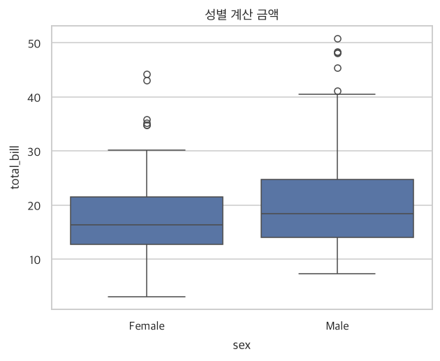
그룹별 중위수(상자 안 선), 퍼짐(상자 크기), 이상치(점)를 한눈에 비교할 수 있습니다. 변수를 하나 더 얹을 수도 있어요 (hue).
sns.boxplot(data=tips, x="day", y="total_bill", hue="sex")
plt.title("요일·성별 계산 금액")
plt.show()
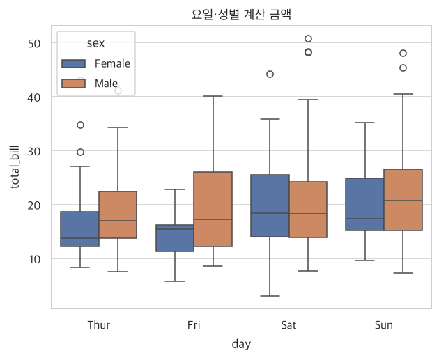
5.2.2 바이올린 그림
바이올린 그림은 상자 그림에 ‘살’을 붙인 것입니다. 상자 그림은 뼈대(요약 숫자)만 보여 주지만, 바이올린은 데이터가 어디에 많이 몰려 있는지(두꺼운 곳)까지 모양으로 보여 줍니다. 바이올린의 허리가 잘록한 곳은 데이터가 적은 구간이에요.
sns.violinplot(data=tips, x="day", y="total_bill", inner="quartile") # inner: 안쪽에 사분위선 표시
plt.title("요일별 계산 금액 분포")
plt.show()
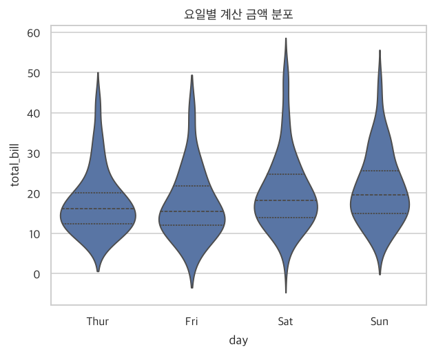
5.2.3 히스토그램: 칸을 나누어 비교
sns.displot(data=tips, x="total_bill", col="sex", bins=15, height=3.6) # col: 그룹마다 칸 나누기
plt.show()
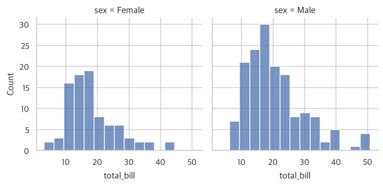
그룹을 한 칸 안에 겹쳐 그리면 직접 비교하기 쉽습니다. 겹침을 투명하게 하려면 alpha를 낮춥니다.
sns.histplot(data=tips, x="total_bill", hue="sex", bins=15, alpha=0.5)
plt.title("성별 계산 금액 히스토그램(겹쳐 그리기)")
plt.show()
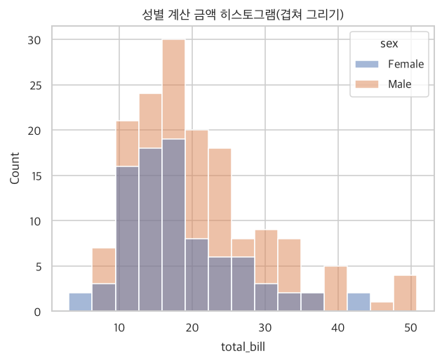
그룹마다 사람 수가 다르면(예: 남성 157팀, 여성 87팀) 막대 높이를 그대로 비교하기 어렵습니다. 이럴 땐 stat="density"와 common_norm=False를 써서 ‘비율’로 맞춰 비교하세요.
sns.histplot(data=tips, x="total_bill", hue="sex", bins=15, stat="density", common_norm=False, alpha=0.5)
plt.title("성별 계산 금액 (집단 크기 보정)")
plt.show()
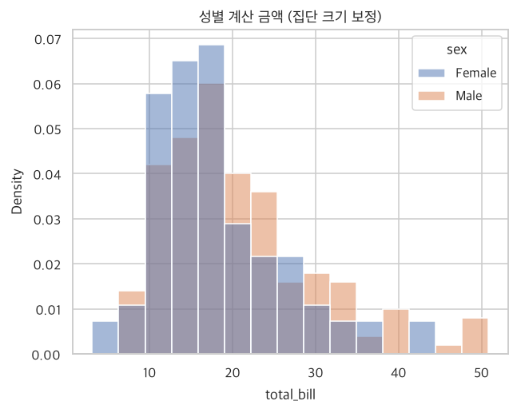
5.2.4 빈도 다각형과 밀도 그래프
막대 여러 개가 겹치면 지저분하죠? 막대 윗부분만 선으로 이어 놓은 것이 빈도 다각형, 이를 더 부드럽게 다듬은 것이 밀도 그래프입니다. 여러 그룹을 투명 필름 여러 장처럼 겹쳐 비교할 때 깔끔해요.
sns.histplot(data=tips, x="total_bill", hue="sex", bins=15, element="poly", fill=False) # 빈도 다각형
plt.title("빈도 다각형")
plt.show()
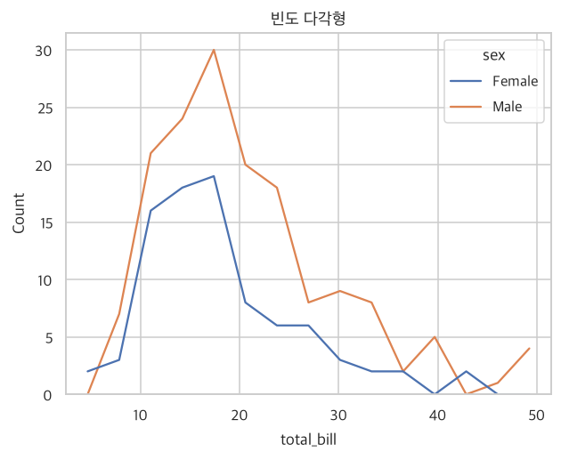
sns.kdeplot(data=tips, x="total_bill", hue="sex", common_norm=False, fill=True, alpha=0.3)
plt.title("성별 계산 금액의 밀도 그래프")
plt.show()
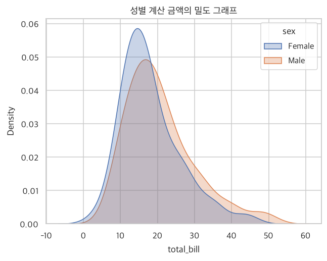
5.2.5 점을 직접 찍어 보기 (산점도·스트립 플롯)
범주가 2~4개이고 관측치가 많지 않다면, 요약 대신 모든 점을 보여 주는 것도 좋은 방법입니다. 같은 자리에 점이 겹치지 않도록 좌우로 살짝 흩뿌리는 것을 지터(jitter)라고 합니다.
출석부에 ‘평균 키’만 적는 대신 학생 전원이 줄 서 있는 모습을 사진으로 찍는 것과 같습니다. 이상한 점(유독 큰 학생), 몰려 있는 구간이 눈에 바로 들어옵니다.
sns.stripplot(data=tips, x="day", y="total_bill", hue="sex", dodge=True, jitter=0.2, alpha=0.7)
plt.title("요일·성별 계산 금액(모든 점 표시)")
plt.show()
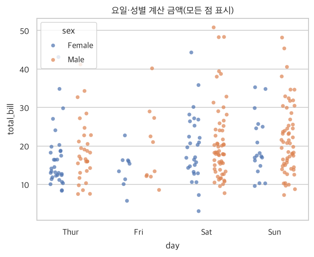
sns.stripplot(data=tips, x="day", y="total_bill", color="gray", alpha=0.4, jitter=0.25) # 점 + 평균(빨간 점)
sns.pointplot(data=tips, x="day", y="total_bill", color="crimson", linestyle="none", errorbar=None)
plt.title("점 + 평균")
plt.show()
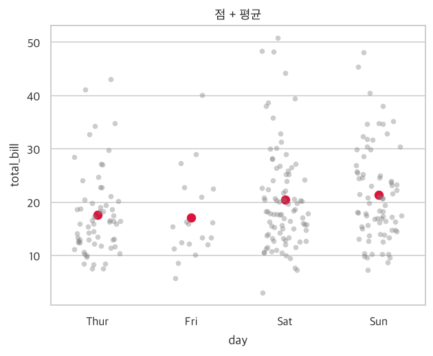
5.3 주의: 혼동 효과 (숨은 변수의 함정)
지금까지는 변수 두 개(범주형 하나, 수치형 하나)만 보았습니다. 그런데 이렇게 두 변수만 보면 틀린 결론에 이를 때가 있습니다. 다이아몬드로 확인해 봅시다. 다이아몬드는 세공(cut) 등급이 높을수록(Ideal이 최고) 비싸야 할 것 같습니다.
order = ["Fair", "Good", "Very Good", "Premium", "Ideal"] # 낮은 등급 → 높은 등급
sns.boxplot(data=diamonds, x="cut", y="price", order=order)
plt.title("세공 등급별 가격")
plt.show()
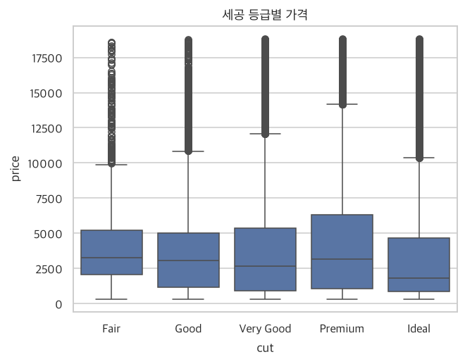
diamonds.groupby("cut")[["price", "carat"]].mean().loc[order].round(2)
| price | carat | |
|---|---|---|
| cut | ||
| Fair | 4358.76 | 1.05 |
| Good | 3928.86 | 0.85 |
| Very Good | 3981.76 | 0.81 |
| Premium | 4584.26 | 0.89 |
| Ideal | 3457.54 | 0.70 |
놀랍게도 최고 등급(Ideal)의 평균 가격이 가장 낮고, 최저 등급(Fair)이 오히려 더 비쌉니다. 세공을 잘할수록 싸다는 뜻일까요? 오른쪽 열(평균 무게)을 보세요. 가장 싼 Ideal은 평균 무게가 작고, 상대적으로 비싼 Fair는 무게가 큽니다.
‘아이스크림을 많이 먹은 날일수록 물놀이 사고가 많다’는 통계가 있다고 합시다. 진짜 원인은 아이스크림이 아니라 ‘더운 날씨’였습니다. 이렇게 두 변수 사이에 끼어 들어 관계를 왜곡하는 제3의 변수를 혼동 변수(confounder)라고 합니다. 다이아몬드에서는 무게(carat)가 그 역할을 했습니다. “무거운 다이아몬드는 세공이 낮은 등급인 경우가 많은데, 무게가 가격을 크게 좌우하니 결국 낮은 등급이 비싸 보였다”는 겁니다.
혼동 변수의 영향을 걷어내려면 무게를 비슷한 것끼리 묶어서 비교하면 됩니다. 무게 구간(범주)을 만들고 그 안에서 세공 등급별 가격을 보겠습니다.
diamonds["carat_group"] = pd.cut(diamonds["carat"], [0, 0.5, 1, 1.5, 5], labels=["~0.5", "0.5~1", "1~1.5", "1.5~"])
sns.barplot(data=diamonds, x="carat_group", y="price", hue="cut", hue_order=order, errorbar=None)
plt.title("무게 구간별·세공 등급별 평균 가격")
plt.xlabel("무게 구간 (carat)")
plt.show()
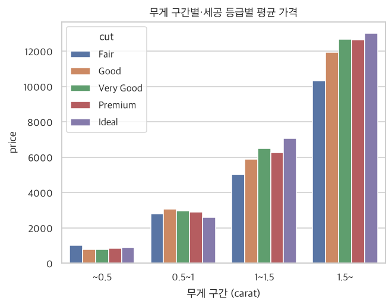
무게가 1캐럿 이상인 구간에서는 세공 등급이 높을수록 가격도 높아지는 ‘상식적인’ 경향이 나타납니다. 반면 가벼운 구간에서는 등급 간 차이가 작고 뒤섞여 있어요. 가격은 세공 등급보다 무게의 영향을 훨씬 크게 받는다는 점도 눈에 띕니다 (막대 높이가 무게 구간에 따라 크게 달라집니다). 무게-가격 관계를 세공 등급별 색으로 그려 봐도 같은 이야기를 할 수 있습니다.
sample = diamonds.sample(4000, random_state=0)
sns.scatterplot(data=sample, x="carat", y="price", hue="cut", hue_order=order, alpha=0.5)
plt.title("무게-가격 관계 (세공 등급별 색)")
plt.show()
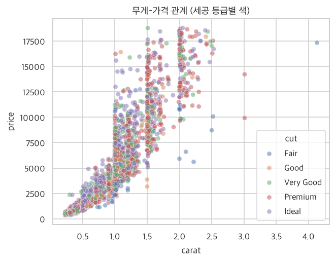
두 변수만 보고 내린 결론을 곧이곧대로 믿지 마세요. 항상 “이 관계를 왜곡할 만한 제3의 변수가 없을까?”를 질문하세요. 이것이 데이터를 해석할 때 가장 중요한 습관 중 하나입니다.
요약: R ↔ 파이썬 대응표
| 하고 싶은 일 | R | 파이썬 |
|---|---|---|
| 그룹별 평균 | tapply(), aggregate() | df.groupby(g)[x].mean() |
| 여러 통계량 한 번에 | 사용자 함수 + aggregate | .agg([...]) |
| 두 집단 평균 검정 | t.test() | stats.ttest_ind() |
| 등분산 검정 | var.test() | stats.levene() |
| 분산분석(ANOVA) | aov() | stats.f_oneway() |
| 상자/바이올린 | geom_boxplot(), geom_violin() | sns.boxplot(), sns.violinplot() |
| 그룹별 히스토그램 | facet_wrap() | sns.displot(col=) |
| 빈도 다각형/밀도 | geom_freqpoly(), geom_density() | histplot(element="poly"), kdeplot() |
| 겹침 방지 점 찍기 | geom_jitter() | sns.stripplot() |